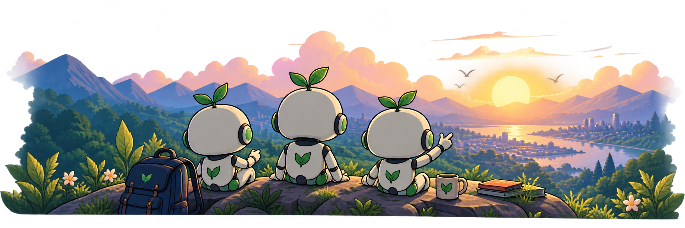
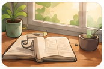
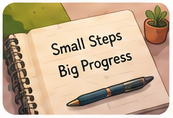
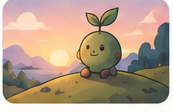
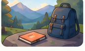

Completed my first week of the Roadmap!
I managed to finish all my suggested sessions this week. Reading feels easier already and I’m spending less time on short videos. Excited to keep going!
Community
Share your journey, get support, and stay motivated with people working on the same thing.

I managed to finish all my suggested sessions this week. Reading feels easier already and I’m spending less time on short videos. Excited to keep going!

I wanted to share a small tip that has been working for me. I set a 10-minute timer, remove distractions, and choose a specific page goal. It’s simple but surprisingly effective!

That 10-minute start makes such a difference.
Today marks 30 days of using DeepSprout. My focus sessions, garden and mood have all improved. Grateful for this community!

Thirty days! That’s such a lovely milestone.
I want to spend more time away from the screen on weekends. What are some activities that helped you the most?

Weekend hikes and a good paperback are my favorites.
No posts match your search yet. Try another category.
Wonderful work, Sara! One week at a time.